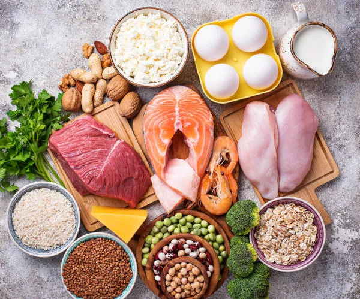
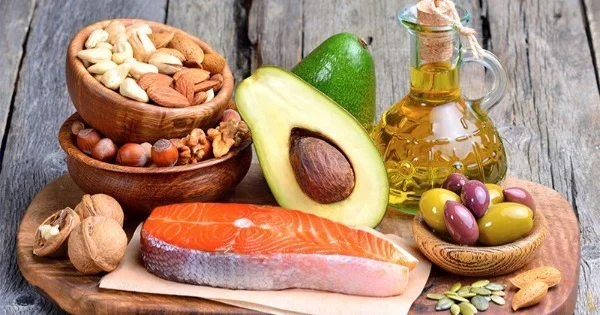
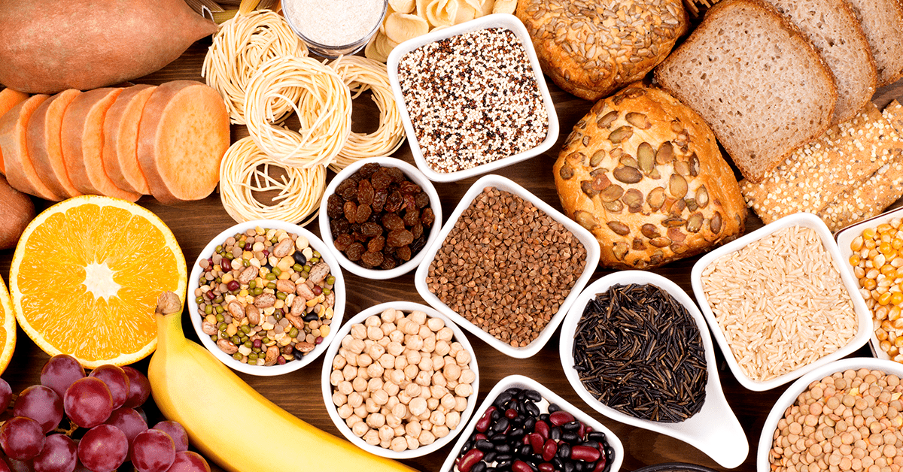
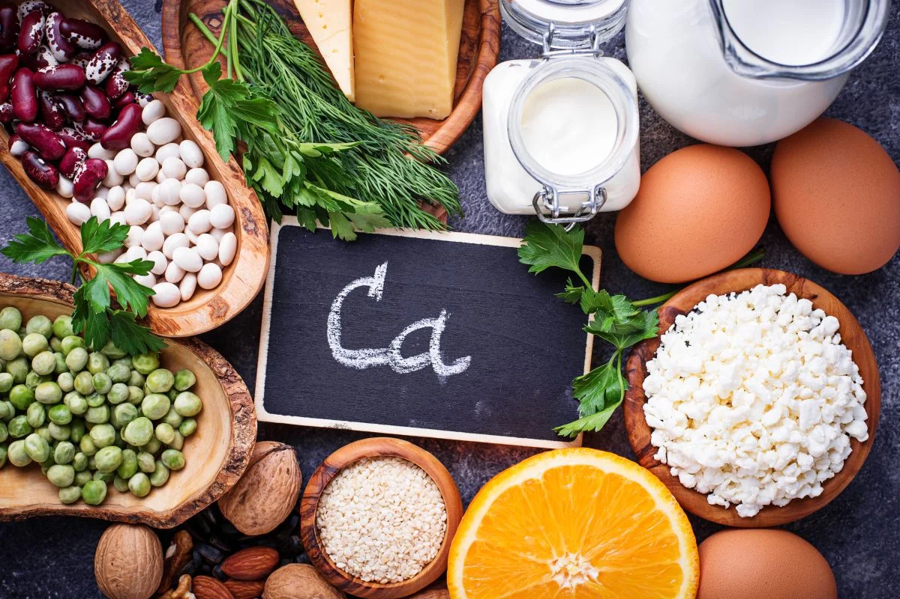
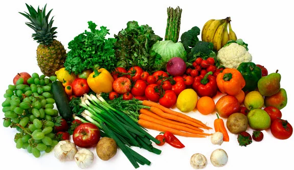

Proteína
As proteínas são essenciais para o funcionamento do corpo humano, desempenhando papéis cruciais na
construção e reparo de tecidos, na produção de enzimas e hormônios, e no suporte ao sistema imunológico. Elas são
compostas por aminoácidos, que são fundamentais para a síntese de novas células e para a manutenção da saúde
geral. Sem proteínas adequadas, o corpo não conseguiria manter suas funções vitais nem responder adequadamente a
lesões e doenças. Assim, uma ingestão adequada de proteínas é crucial para a saúde e o bem-estar geral.

Proteínas(Animais)
| Alimentos(100g) |
Quantidade de Proteína |
| Ovo de Galinha |
78g |
| Carne Bovína |
20 a 30g |
| Frango |
27g |
| Carne Suína |
15 a 27g |
| Atum em Conserva |
26,2g |
| Bacalhau Refogado |
24g |
| Salmão Grelhado |
23,9g |
| Queijos |
21,4g |
| Iogurte |
3,2g |
| Leite de Vaca Integral |
2,3g |
Proteínas(Vegetais)
| Alimentos(100g) |
Quantidade de Proteína |
| Amêndoa |
20,6g |
| Castanha de Caju |
18,2g |
| Grão de Bico |
7,45g |
| Lentilha |
7,3g |
| Tofu |
6,5g |
| Ervilha |
5,6g |
| Arroz Integral |
4,7g |
| Feijão Preto Cozido |
4,4g |
| Quinoa |
4,4g |
| Aveia |
4,18g |
Lipídios
Os lipídios são nutrientes essenciais que desempenham papéis vitais no corpo, como o fornecimento de energia de
longo prazo e a formação de membranas celulares. Eles também são fundamentais para a absorção de vitaminas
lipossolúveis (A, D, E e K) e para a produção de hormônios. Além disso, os lipídios atuam como isolantes térmicos
e protetores dos órgãos internos. Uma quantidade equilibrada de lipídios é crucial para manter a saúde e o
funcionamento adequado do organismo.

Lipídios
| Alimentos(100g) |
Quantidade de Lipídios |
| Abacate |
8,4g |
| Azeite de Oliva |
100g |
| Carne |
10 a 28g |
| Castanha do Brasil |
63,5g |
| Chocolate Meio Amargo |
29,9g |
| Coco Seco |
42g |
| Linhaça |
32,3g |
| Manteiga Sem Sal |
86g |
| Ovo Cozido |
30,8g |
| Salmão Grelhado |
14g |
Carboidratos/Fibras
Os carboidratos são a principal fonte de energia para o corpo, sendo essenciais para o funcionamento adequado dos
músculos e do cérebro. Além disso, eles ajudam a regular o nível de açúcar no sangue e a reabastecer as reservas
de glicogênio nos músculos. As fibras, por sua vez, são um tipo de carboidrato que não é digerido, mas desempenha
um papel crucial na saúde digestiva, ajudando a regular o trânsito intestinal e a prevenir constipação. Juntas,
carboidratos e fibras promovem uma digestão saudável e fornecem energia essencial para o corpo.

Carboidratos/Fibras(Cereais e Leguminosas)
| Alimentos(100g) |
Quantidade de Carboidrato |
Quantidade de Fibras |
| Farinha de Milho |
79,1g |
5,5g |
| Farinha de Trigo Branca |
75,1g |
2,3g |
| Farinha de Centeio Integral |
73,3 |
15,5g |
| Pão Francês Branco |
58,6g |
2,3g |
| Pão de forma integral |
49,9g |
6,9g |
| Arroz Branco Cozido |
28,1g |
1,6g |
| Arroz Integral Cozido |
25,8g |
2,7g |
| Macarrão Branco Cozido |
30,9g |
1,8g |
| Macarrão Integral Cozido |
30,1g |
3,9g |
| Aveia em Flocos |
66,6g |
9,1g |
| Feijão Preto Cozido |
14g |
8,4g |
| Grão de Bico Cozido |
27,4g |
7,6g |
| Lentilha Cozida |
16,3g |
7,9g |
Carboidratos/Fibras(Frutas)
| Alimentos(100g) |
Quantidade de Carboidrato |
Quantidade de Fibras |
| Tamarindo |
72,5g |
6,4g |
| Pinha |
22,4g |
3,4g |
| Uva |
13,6g |
0,9g |
| Jaca |
22,5g |
2,4g |
| Manga |
19,4g |
1,6g |
| Mamão |
10,4g |
1g |
| Pera |
14g |
3g |
| Maçã |
15,2g |
1,3g |
| Banana |
26g |
2g |
Carboidratos/Fibras(Vegetais)
| Alimentos(100g) |
Quantidade de Carboidrato |
Quantidade de Fibras |
| Inhame |
27,5g |
3,9g |
| Macaxeira Cozida |
30,1g |
1,6g |
| Beterraba Crua |
11,1g |
3,4g |
| Vagem Cozida |
11,7g |
4,2g |
| Cará Cozido |
18,9g |
2,6g |
| Abóbora Cozida |
10,8g |
2,6g |
| Batata Inglesa Cozida |
11,9g |
1,3g |
| Batata Doce Cozida |
18,4g |
2,2g |
Cálcio
O cálcio é um mineral crucial para a saúde óssea e dental, pois é um dos principais componentes dos ossos e
dentes, ajudando a mantê-los fortes e resistentes. Além disso, o cálcio desempenha um papel importante na função
muscular, na coagulação sanguínea e na transmissão de impulsos nervosos. Uma ingestão adequada de cálcio é
fundamental para prevenir doenças ósseas como a osteoporose e garantir o funcionamento eficiente dos sistemas
corporais. Assim, a manutenção de níveis adequados de cálcio é essencial para a saúde geral.

Cálcio
| Alimentos(100g) |
Quantidade de Cálcio |
| Alecrim |
1280mg |
| Leite Integral em Pó |
890mg |
| Queijo Muçarela |
875mg |
| Gergelim |
825mg |
| Manjericão |
600mg |
| Sardinha |
438mg |
| Leite de Soja |
280mg |
| Amêndoa |
270mg |
| Queijo Ricota |
253mg |
| Linhaça |
250mg |
| Grão de Soja Cru |
250mg |
| Levedo de Cerveja |
213mg |
| Couve Refogada |
177mg |
| Tofu |
160mg |
| Iogurte Desnatado |
157mg |
| Castanha do Pará |
146mg |
| Leite Desnatado |
134mg |
| Agrião |
133mg |
| Grão de Bico |
120mg |
| Leite de Cabra |
112mg |
Ferro
O ferro é um mineral essencial que desempenha um papel crucial na formação da hemoglobina, a proteína responsável
por transportar oxigênio dos pulmões para o resto do corpo. Além disso, o ferro é importante para a produção de
energia e o funcionamento adequado do sistema imunológico. A deficiência de ferro pode levar a anemia ferropriva,
que causa fadiga e fraqueza. Portanto, garantir uma ingestão adequada de ferro é vital para manter a energia e a
saúde geral.

Ferro(Animais)
| Alimentos(100g) |
Quantidade de Ferro |
| Fígado de Frango Cozido |
12,9mg |
| Coração de Frango |
5,96mg |
| Ostras Cozidas |
4,9mg |
| Fígado Bovino Grelhado |
5,8mg |
| Carne Moída Cozida |
2,7mg |
| Atum Assado |
1,3mg |
| Gema de Ovo Cozida |
2,9mg |
| Ovo de Galinha Inteiro Cozido |
1,5mg |
| Cordeiro Cozido |
2,7mg |
| Sardinha Assada |
1,3mg |
Ferro(Vegetais)
| Alimentos(100g) |
Quantidade de Ferro |
| Espirulina |
28,5mg |
| Sementes de Abóbora Torrada |
14,9mg |
| Cacau em Pó |
13,9mg |
| Tofu |
1,4mg |
| Sementes de Girassol |
5,2mg |
| Uva Passa |
1,8mg |
| Coco Maduro Cru |
1,8mg |
| Noz |
2mg |
| Feijão Preto Cozido |
1,5mg |
| Amendoim Torrado |
1,3mg |
| Grão de Bico Cozido |
2,9mg |
| Lentilhas Cozidas |
1,5mg |
| Aveia em Flocos |
4,4mg |
| Ervilha Verde Cozida |
1,5mg |
| Feijão Verde |
1,4mg |
| Pão de Cevada |
3,86mg |
| Pão de Centeio |
2,83mg |
Vitaminas
As vitaminas são nutrientes essenciais que desempenham diversos papéis vitais no corpo. A vitamina A é crucial
para a visão, saúde da pele e sistema imunológico. As vitaminas do complexo B (B1, B2, B3, B5, B6, B7, B8, B9 e
B12) estão envolvidas no metabolismo energético, na formação de glóbulos vermelhos e no funcionamento do sistema
nervoso. A vitamina C é um potente antioxidante que apoia o sistema imunológico e a síntese de colágeno. A
vitamina D é essencial para a absorção de cálcio e a saúde óssea. A vitamina E atua como um antioxidante,
protegendo as células dos danos. Finalmente, a vitamina K é fundamental para a coagulação sanguínea e a saúde
óssea. A ingestão adequada de todas essas vitaminas é crucial para manter a saúde e o bom funcionamento do
organismo.

Vitaminas
| Vitamina A |
B1(Tiamina) |
B2(Riboflavina) |
B3(Niacina) |
B5(Ácido Pantotênico) |
B6(Piridoxina) |
B7(Biotina) |
| Fígado |
Carne de Porco |
Fígado |
Levedo de Cerveja |
Massa Fresca |
Fígado |
Amendoim |
| Leite |
Castanha do Pará |
Levedo de Cerveja |
Fígado |
Fígado |
Banana |
Avelã |
| Ovos |
Aveia |
Faralo de Aveia |
Amendoim |
sementes de Girassol |
Salmão |
Farelo de trigo |
| B8(Colina) |
B9(Ácido Fólico) |
B12(Cobalamina) |
Vitamina C |
Vitamina D |
Vitamina E |
Vitamina K |
| Ovo |
Fígado |
Fígado |
Morango |
Óleo de Fígado de Bacalhau |
Óleo de Gérmen de Trigo |
Couve de Bruxelas |
| Levedo de Cerveja |
Levedo de Cerveja |
Marisco |
Kiwi |
Salmão |
Sementes de Girassol |
Brócolis |
| Fígado de Frango |
Lentilha |
Ostras |
Laranja |
Sardinha |
Avelã |
Couve Flor |